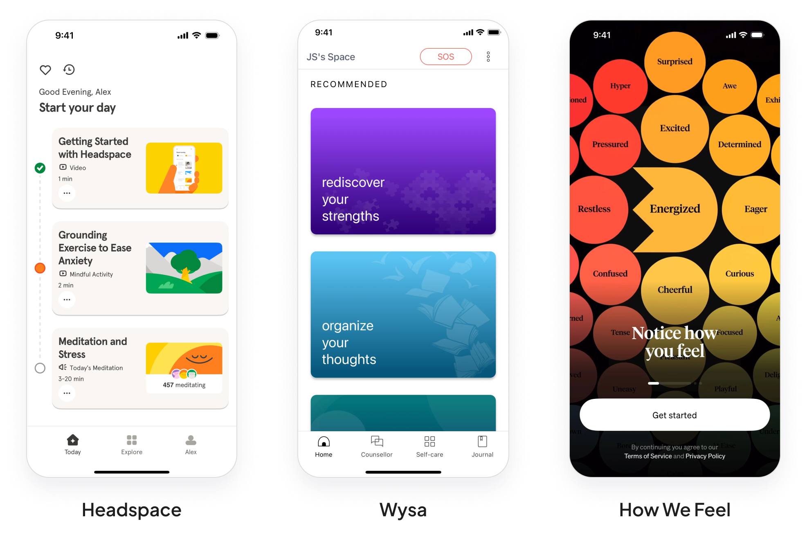
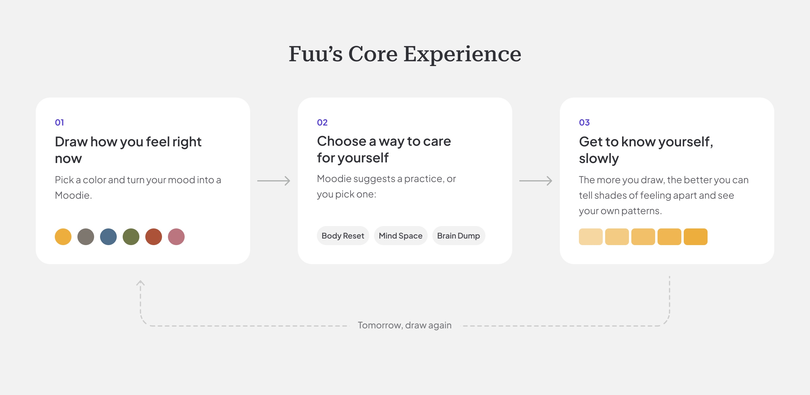

Oct 2026
Fuu | Draw the feelings you can’t put into words
Try the live prototypeProject Overview
Outcome
Fuu is an emotional companion app that uses drawing as its medium, helping people express how they feel — even when they’re exhausted, frustrated, or can’t find the words.
Unlike most mood apps, which rely on journaling or guided exercises, Fuu uses drawing as the starting point for exploring emotions. Users pick a color that matches their mood, then draw their own character, a Moodie, or choose a preset. With little energy, they can send it in seconds; with more to let out, they can doodle freely and turn hard-to-describe feelings into a picture.
After drawing, Fuu recommends a simple self-care exercise they can start right away, based on how they feel — so expressing emotions doesn’t stop at a record, but turns into real self-care.
Role & Output
A personal side project. From product positioning, competitive research and business model to user flows, UI design, design system and interactive prototype, I planned and executed everything.
I used AI to support ideation and implementation, and validated and iterated the design through hands-on testing and feedback from friends.
Challenge
The biggest challenge was protecting Fuu’s core positioning: lightweight and low-effort.
Many reasonable-sounding features, such as text journaling or daily streaks, could add complexity to the product and raise the effort required from users.
Goal
No need to sort out your thoughts first — express your mood by drawing in just a few seconds, and find one small thing you can do right now. Over time, you gradually get to know your emotions, and yourself.
Background
For many office workers under constant pressure, noticing that they’re not okay isn’t the hard part.
After a long day, their body is exhausted but their mind won’t stop. Faced with tangled emotions, they may not be able to tell whether they’re angry, hurt, or simply tired.
It’s not that they haven’t tried. Journaling takes effort to organize thoughts and raises privacy concerns. Meditation requires focus that a tired mind struggles to give. Mood-tracking apps offer emotion labels, but the right word isn’t always there — and even after logging, they don’t necessarily know what to do next.
“When people need to take care of themselves the most, they often have the least energy to do so.”
Fuu starts from this everyday struggle and lowers the barrier to expressing and exploring emotions. No need to find the right words — a simple drawing captures how you feel right now, followed by a self-care exercise that fits the moment, helping you build self-understanding over time.
Design Process
- Research & Positioning
Analyzed six mood apps to find common gaps, and explored replacing text with drawing as a way to express emotions — letting users understand their feelings more naturally through visual creation.
- Define the Problem
Built a persona and an anti-persona to clarify Fuu’s target users, core needs and positioning, and set the design direction and scope.
- Decide What Not to Build
Dropped the text-centered approach of traditional mood trackers and made drawing the main medium, so the product wouldn’t become just another journal or logging tool.
- Flows & Structure
Built the core flow around “draw your emotion → understand it → get an exercise,” planning the home screen, three self-care tools and a review page for a complete, intuitive experience.
- UI & Design System
Created an emotion color system, UI components and design rules — for example, “fully rounded means interactive” — to keep a consistent visual language as pages and features grow.
- Test & Iterate
Invited friends to try the prototype, observed their behavior and reactions, dug into the real reasons behind their feedback, and refined the design based on what I found.
Current State & Define
I analyzed six mood apps (Calm, Headspace, Daylio, Moodfit, Wysa, How We Feel) and found they fall into two groups: text-based, recording feelings through journals or emotion words, and guided-practice-based, such as meditation, breathing exercises and courses. Both have value, but for users who are drained after work, they still take real effort to get started.

Competitive Research
1. Lower the barrier to expressing emotions
When people are tired, it’s hard to describe how they feel. So Fuu uses drawing as the starting point — you can express your mood without first finding the right words.
2. Shorten the gap between noticing a feeling and acting on it
Most mood trackers stop once you’ve logged. Fuu recommends a small exercise you can do right now based on the emotion you chose, so you don’t have to figure out what to do next.
3. Take the pressure out of self-care
Fuu doesn’t push streaks or complete entries, and doesn’t ask users to express everything every time. Picking a single color and sending your mood still counts as a check-in. The goal isn’t to make users log more — it’s to give them, even when they’re exhausted, an easy way to start and get support right away.
Design Approach
Fuu uses drawing as the entry point for expressing emotions, lowering the barrier to exploring them, then offers an immediate, doable self-care exercise. With a low-effort design that avoids forced streaks and comparison, users can care for their emotions at their own pace and gradually build self-understanding.

Challenges & Constraints
1. Staying lightweight: choosing what to cut
Many features seemed reasonable but didn’t fit Fuu’s core positioning. In the end, I chose to cut three features:
- Text field: to keep expression from sliding back into journaling, which adds writing effort and privacy concerns.
- Editing drawings: to stop users chasing a polished picture, and keep the meaning of in-the-moment expression.
- Streaks: self-care shouldn’t be measured in consecutive days, and breaking a streak only brings frustration.
2. Responsibility and boundaries in mental-health products
Drawing on ideas from art and emotional exploration, Fuu is positioned as an everyday emotional companion — not therapy or a professional diagnostic service.
Because users may express high-risk content, when the system detects crisis-related words it pauses the interaction and guides users toward real support and professional help.
Deliverables
- Moodies
Pick a color that matches your mood and a hand-drawn character appears. As users get familiar, they can explore finer sub-emotions — such as “missing someone” or “lonely” within sadness. Recognizing emotions is a skill, so sub-emotions are free for everyone.
- Three Tools
Body Reset, Mind Space and Brain Dump each serve a different moment. The difference between Brain Dump and a journal: a journal is for keeping; Brain Dump is for letting go.

Want to draw your own Moodie? Open the prototype →
User Testing
User testing isn’t just collecting opinions. What matters more is understanding the need behind each piece of feedback, and making trade-offs between product positioning and user experience.
Now
Both comments point to the same issue: tapping a feeling is already the decision. So I removed Next and go straight to the next screen — users can go back if they picked wrong.
The opening greeting, “How are you feeling today?”, didn’t make clear that colors map to emotions, so I rewrote the copy.
Next
A complicated day can hold more than one emotion. The MVP validates the core “one Moodie a day” flow first; V2 will allow two or three a day.
Planned for V2, but only from the review screen afterward — so users aren’t thinking about making it look good while they draw.
Never
Fuu captures the mood of the moment. If drawings could be edited afterward, users would start chasing a nice-looking picture and the record would lose its meaning.
An undo button already exists while drawing.
Business Model
Fuu puts its paid value in long-term self-understanding, not in limiting support in the moment. Moodies, sub-emotions and basic exercises are free, so users can always express and sort out their feelings. Once they’ve built up some history, a subscription unlocks weekly and monthly reports and exercise insights, revealing how emotions, habits and practice connect.
Sub-emotions stay free on purpose: recognizing emotions is the foundation of self-understanding and shouldn’t sit behind a paywall. The free experience keeps users exploring, and gives Fuu the long-term data needed for future personalized insights.
Reflection
1Design is about trade-offs, not just adding more
This project taught me that more features don’t mean a better experience. Every new feature can add effort for users, or even pull the product away from the problem it set out to solve. So rather than adding more, what matters is going back to the core, judging which needs are truly worth solving, and whether there’s a simpler way to get there.
2Designing boundaries
An emotional-wellbeing product isn’t only an outlet — it also has to know its limits. Fuu can help users understand and sort out everyday emotions, but it can’t replace professional help. When users show signs of crisis, guiding them to real resources while keeping the experience gentle is a responsibility the designer has to own.